30 days
Case study
Griffin Malware Tool
Team Cymru's threat intelligence work usually lived deep in the network layer, where the value was real but difficult to see. Griffin brought that capability into a usable product experience for less experienced system admins: a malware scanning tool that helped them read risk, act on results, and further secure their digital footprint. I designed the product experience and branding, giving a clearer face to a headless tool.
tl;dr
- Griffin gave a headless malware scan a clearer product experience and brand.
- The audience needed enough context to read risk and take action without becoming malware specialists.
- Flow mapping showed that the hardest moment came after the scan, when a threat score and report needed interpretation.
- MVP testing confirmed setup and progress were manageable; the results screen needed stronger hierarchy and plain-language support.
- The final six-screen walkthrough kept the path tight: choose a scan, follow progress, review results, and save the report.
The Process
Give the Tool a Face First
Before there was an interface, Griffin needed a public-facing identity. Team Cymru had credibility in security circles, but this product would meet admins who might not know the organization. The name, mark, and tone needed to make the work feel credible before anyone saw a result.
The griffin worked because it suggested protection, not panic. Early sketches explored how simple the form could become while still feeling recognizable. The final direction kept the guardian idea and made it clean enough for small sizes, light backgrounds, and dark product screens.
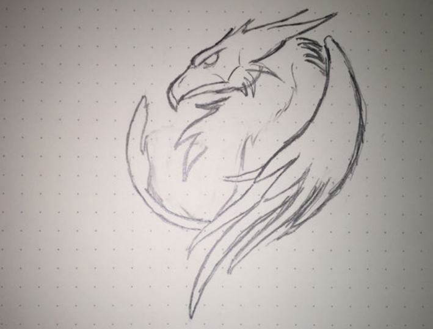
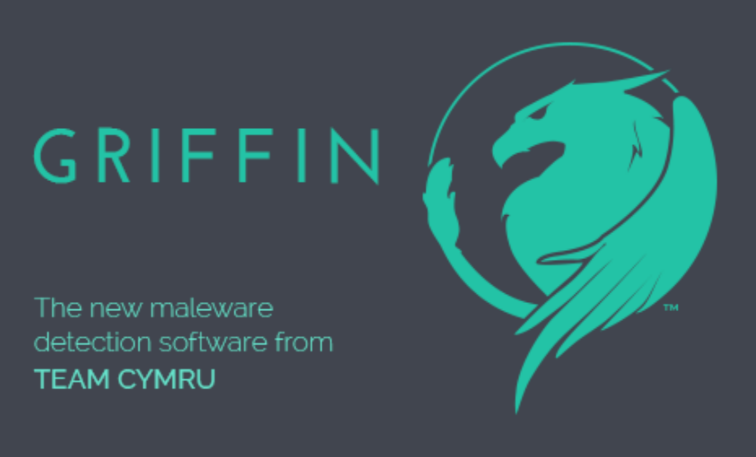
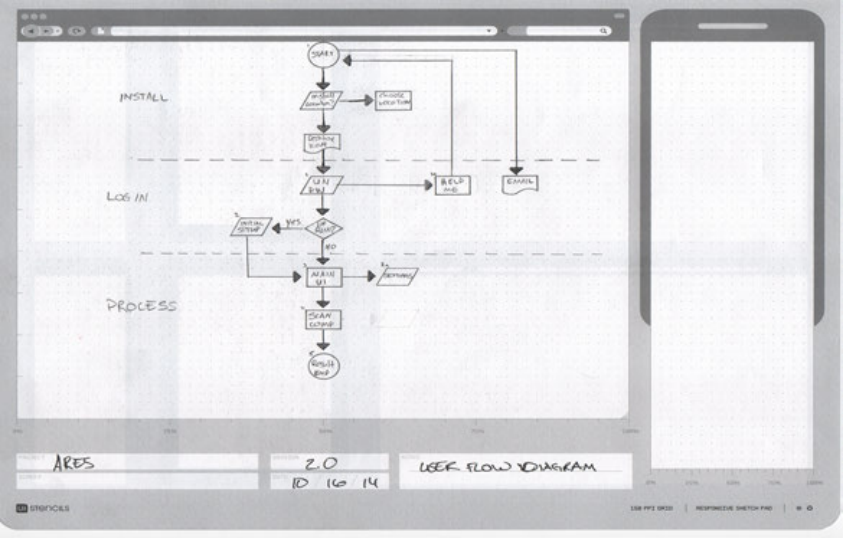
Design Around the Admin's Next Question
Security products often start from available system data. For Griffin, I worked from the admin's next question: what should I run, what is happening, how serious is this, and what should I do now?
The flow treated scan choice, progress, report detail, and save as a sequence of decisions. That kept the interface focused on judgment, not just output.
The report state became the critical moment. A threat count by itself is ambiguous; people needed to know what the number meant, whether it was urgent, and where to go next.
Use the MVP to Locate Confusion
The first MVP was intentionally plain: choose a scan, run it, review results, open the report. Its job was not to look finished. Its job was to reveal where confidence dropped.
Testing showed that running the scan was easy enough to follow. The hesitation came at results: a score like 92 drew attention, but it needed context before it could guide action.
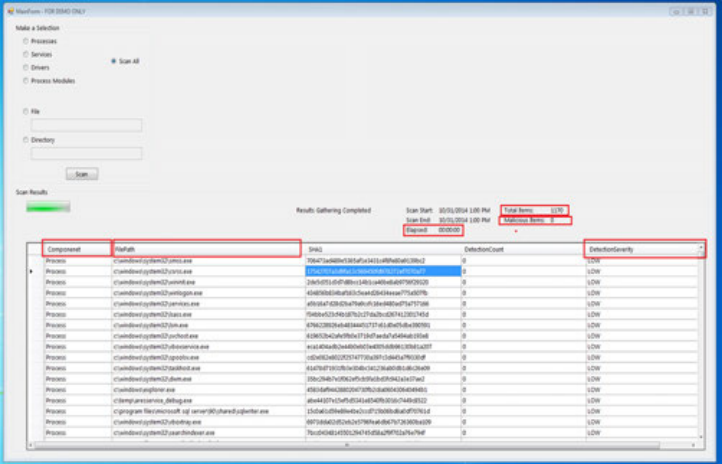
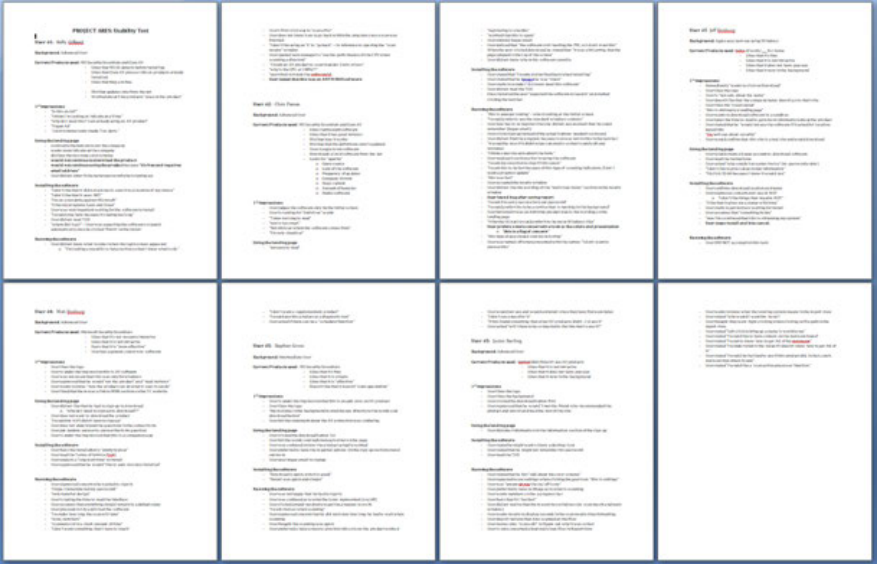
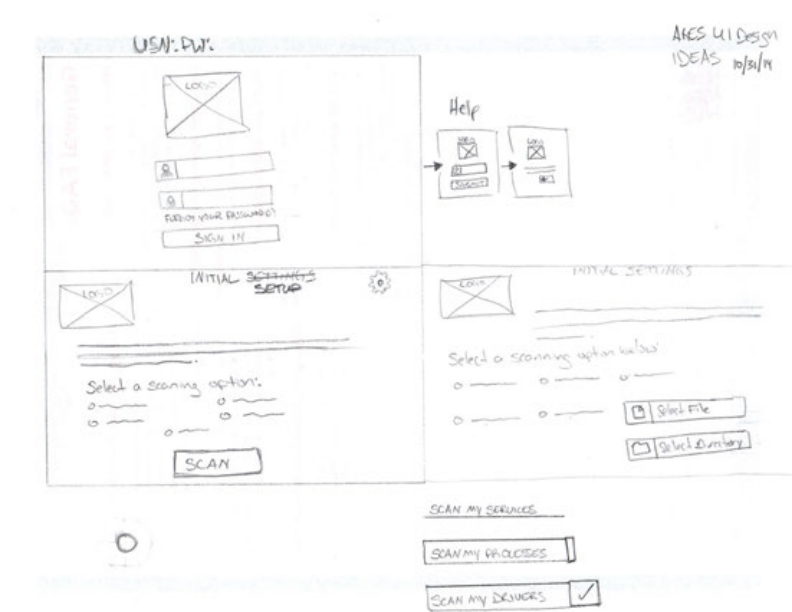
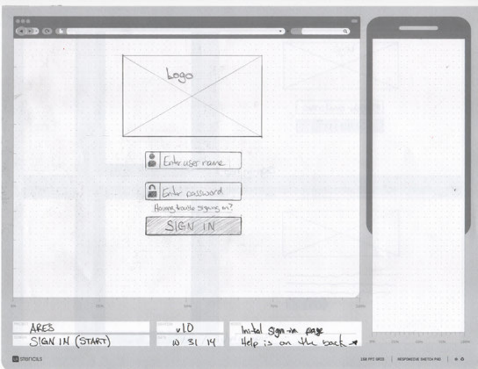
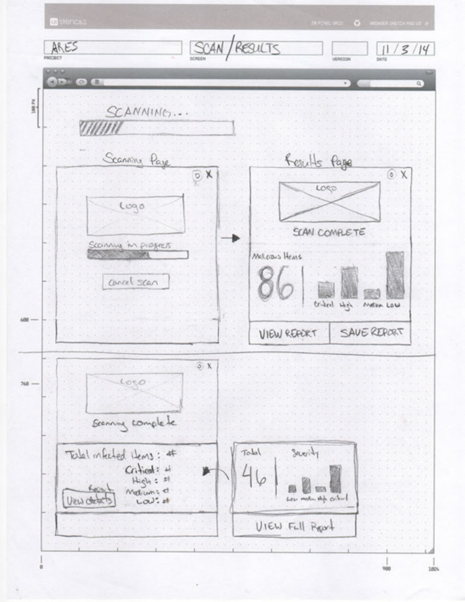
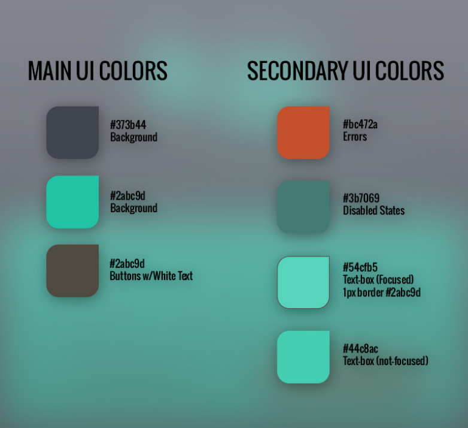
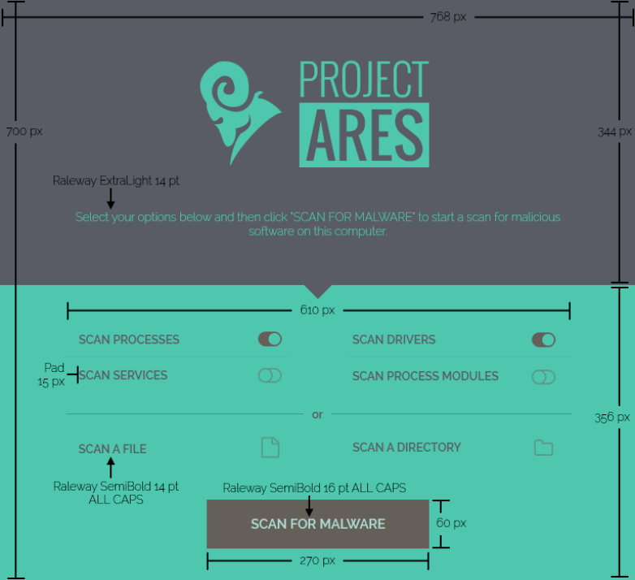
Let the Visual System Stay Calm
The final direction avoided the red-alert language common in security tools. A dark base with teal accents made the interface feel analytical and controlled, which suited a workflow meant to clarify risk rather than amplify anxiety.
Wireframes resolved hierarchy before styling. The key question was what needed to be visible at a glance and what could wait until the user asked for more detail. The Project Ares mark anchored the environment without competing with the scan flow.
Teach Through the Product States
The final walkthrough used six screens, each tied to a real product state. Instead of separating instruction from use, the sequence taught by doing.
Scan options became three clear choices. Progress feedback stayed visible and contained. The results screen led with the score but supported it with enough context to make the number useful. Report detail and save actions let admins go deeper without losing the path.
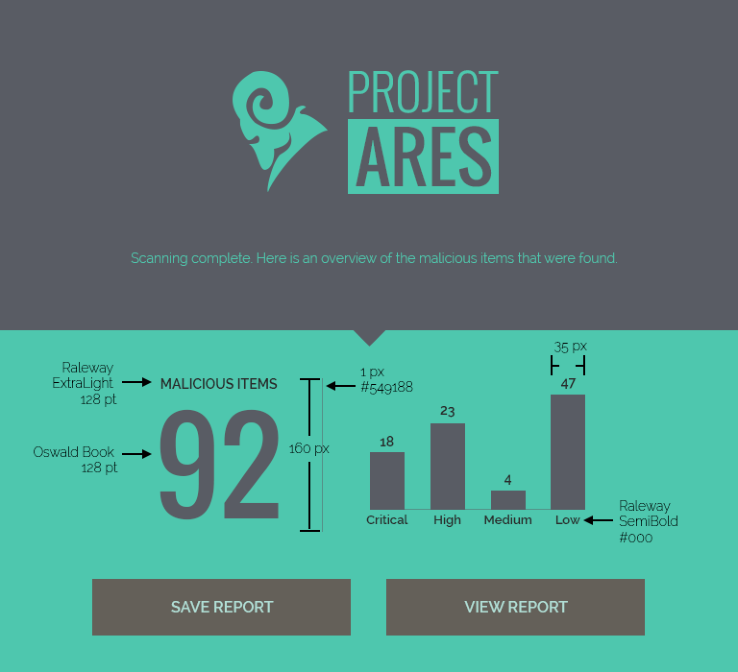
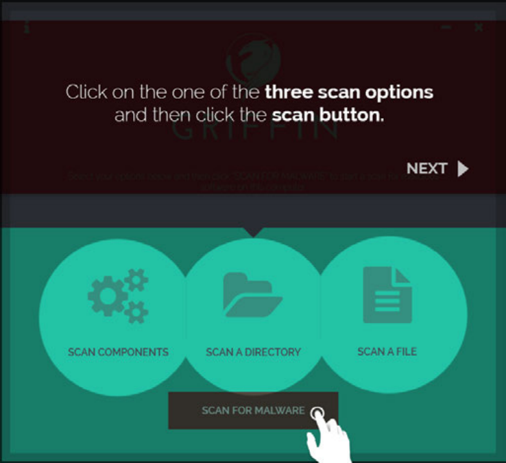
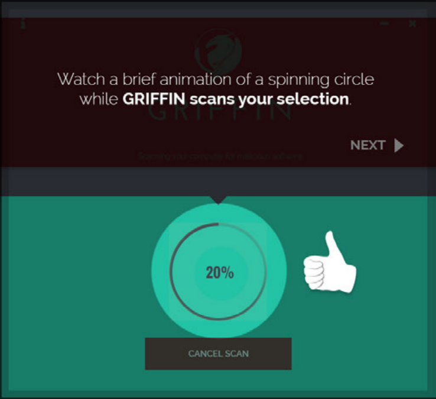
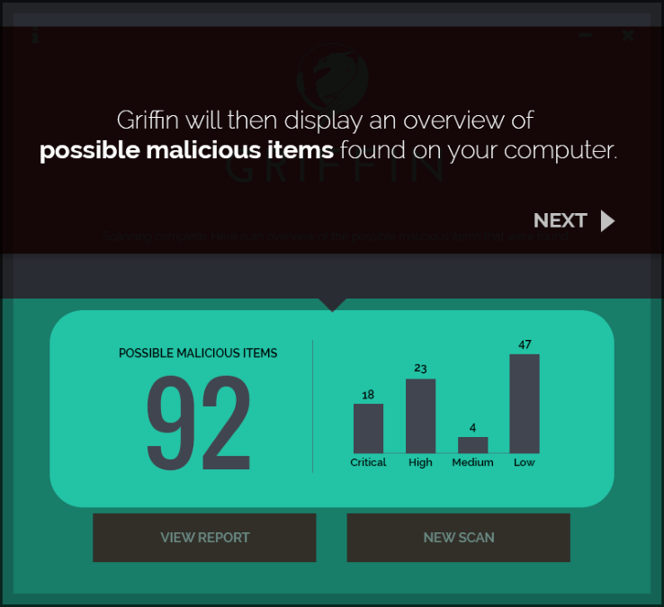
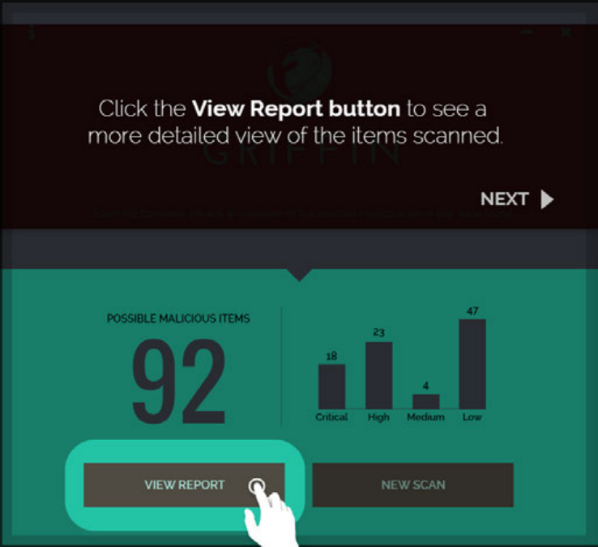
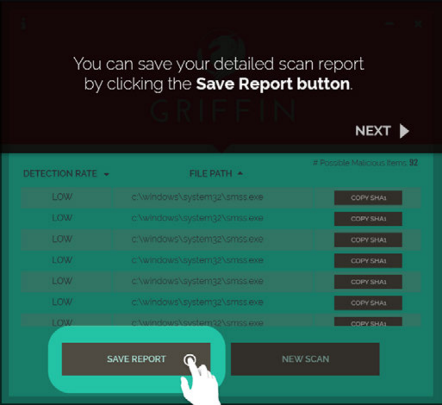
Outcome
Griffin shipped as a malware scanning tool that gave admins a clearer way to read risk and act on results.
The process kept the work grounded in comprehension. Branding made the product approachable, flow work surfaced the hard questions early, and testing showed where the design needed to slow down and clarify.
What held in the final design
- A brand system that made a technical utility feel protective rather than faceless.
- A flow organized around admin decisions, especially once results appeared.
- An MVP used to find where comprehension broke down before visual details locked.
- A six-screen walkthrough that introduced the scan without turning it into a manual.
Continue Exploring
Contact
Want to talk through the Griffin product experience?
I can walk through the branding decisions, the flow model, or what testing changed in the final walkthrough.
A good conversation is usually the best start.